Lecturer : Prof. Marco Hutter, Prof. Roland Siegwart, Dr Jesus Tordesillas
Kinematics
position
Cartesian coordinate : χ P c = [ x y z ] , r = [ x y z ] \boldsymbol \chi_{Pc}=\begin{bmatrix}x\\y\\z\end{bmatrix}, \bf r=\begin{bmatrix}x\\y\\z\end{bmatrix} χ P c = x y z , r = x y z Cylindrical coordinate : χ P z = [ ρ θ z ] , A r = [ ρ cos θ ρ sin θ z ] \boldsymbol \chi_{Pz}=\begin{bmatrix}\rho\\\theta\\z\end{bmatrix},_{\mathcal A}\bf r=\begin{bmatrix}\rho \cos \theta \\\rho \sin\theta\\z\end{bmatrix} χ P z = ρ θ z , A r = ρ cos θ ρ sin θ z Spherical coordinate : χ P s = [ r θ ϕ ] , A r = [ r cos θ sin θ r sin θ sin ϕ r cos ϕ ] \boldsymbol \chi_{Ps}=\begin{bmatrix}r\\\theta\\\phi\end{bmatrix},_{\mathcal A}\bf r=\begin{bmatrix}r\cos\theta\sin\theta\\ r\sin\theta\sin\phi\\ r\cos\phi\end{bmatrix} χ P s = r θ ϕ , A r = r cos θ sin θ r sin θ sin ϕ r cos ϕ
linear velocity
r ˙ = E P ( χ P ) χ ˙ P χ ˙ P = E P − 1 ( χ P ) r ˙ \begin{aligned}
\dot {\bf r} &= \textbf E_P(\boldsymbol \chi_P)\dot {\boldsymbol \chi}_P
\\
\dot{\boldsymbol \chi}_P &= \textbf E_P^{-1}(\boldsymbol \chi_P)\dot {\textbf r}
\end{aligned}
r ˙ χ ˙ P = E P ( χ P ) χ ˙ P = E P − 1 ( χ P ) r ˙
Cartesian coordinate : E P c = E P c − 1 = I \textbf E_{Pc} =\textbf E_{Pc}^{-1}= \mathbb I E P c = E P c − 1 = I Cylindrical coordinate : E P z = [ cos θ − ρ sin θ 0 sin θ ρ cos θ 0 0 0 1 ] \textbf E_{Pz}=\begin{bmatrix}\cos\theta&-\rho\sin\theta&0\\\sin\theta&\rho\cos\theta &0\\0&0&1\end{bmatrix} E P z = cos θ sin θ 0 − ρ sin θ ρ cos θ 0 0 0 1 E P z − 1 = [ cos θ sin θ 0 − sin θ / ρ cos θ / ρ 0 0 0 1 ] \textbf E_{Pz}^{-1} = \begin{bmatrix}\cos\theta&\sin\theta&0\\-\sin\theta/\rho&\cos\theta/\rho &0\\0&0&1\end{bmatrix} E P z − 1 = cos θ − sin θ / ρ 0 sin θ cos θ / ρ 0 0 0 1 Spherical Coordinate : E P s = [ cos θ sin ϕ − r sin ϕ sin θ r cos ϕ cos θ sin ϕ sin θ r cos θ sin ϕ r cos ϕ sin θ cos ϕ 0 − r sin ϕ ] \textbf E_{Ps}=\begin{bmatrix}\cos\theta\sin\phi & -r\sin\phi\sin\theta & r\cos\phi\cos\theta\\\sin\phi\sin\theta & r\cos\theta\sin\phi & r\cos\phi \sin\theta\\ \cos\phi & 0 & -r\sin\phi\end{bmatrix} E P s = cos θ sin ϕ sin ϕ sin θ cos ϕ − r sin ϕ sin θ r cos θ sin ϕ 0 r cos ϕ cos θ r cos ϕ sin θ − r sin ϕ E P s − 1 = [ cos θ sin ϕ sin ϕ sin θ cos ϕ − sin θ / ( r sin ϕ ) cos θ / ( r sin ϕ ) 0 ( cos ϕ cos θ ) / r ( cos ϕ sin θ ) / r − sin ϕ / r ] \textbf E_{Ps}^{-1}=\begin{bmatrix}\cos\theta\sin\phi & \sin\phi\sin\theta&\cos\phi\\-\sin\theta/(r\sin\phi)&\cos\theta/(r\sin\phi)&0\\(\cos\phi\cos\theta)/r&(\cos\phi\sin\theta)/r& -\sin\phi /r\end{bmatrix} E P s − 1 = cos θ sin ϕ − sin θ / ( r sin ϕ ) ( cos ϕ cos θ ) / r sin ϕ sin θ cos θ / ( r sin ϕ ) ( cos ϕ sin θ ) / r cos ϕ 0 − sin ϕ / r
rotation
Passive Rotation : A u = C A B ⋅ B u _{\mathcal A}\textbf u = \textbf C_{\mathcal{AB}}\cdot_{\mathcal B}\textbf u A u = C A B ⋅ B u Active Rotation : A v = R ⋅ A u _{\mathcal A}\textbf v=\textbf R\cdot _{\mathcal A}\textbf u A v = R ⋅ A u
Elementary Rotation : C x ( φ ) = ( 1 0 0 0 cos φ − sin φ 0 sin φ cos φ ) \textbf C_x(\varphi)=\begin{pmatrix}1&0&0\\0&\cos\varphi&-\sin\varphi\\0&\sin\varphi&\cos\varphi\end{pmatrix} C x ( φ ) = 1 0 0 0 cos φ sin φ 0 − sin φ cos φ C y ( φ ) = ( cos φ 0 sin φ 0 1 0 − sin φ 0 cos φ ) \textbf C_y(\varphi) = \begin{pmatrix}\cos\varphi & 0 &\sin\varphi \\0&1&0\\-\sin\varphi&0&\cos\varphi\end{pmatrix} C y ( φ ) = cos φ 0 − sin φ 0 1 0 sin φ 0 cos φ C z ( φ ) = ( cos φ − sin φ 0 sin φ cos φ 0 0 0 1 ) \textbf C_z(\varphi)=\begin{pmatrix}\cos\varphi&-\sin\varphi&0\\\sin\varphi&\cos\varphi&0\\0&0&1\end{pmatrix} C z ( φ ) = cos φ sin φ 0 − sin φ cos φ 0 0 0 1
Euler Angle
ZYZ Euler Angle (yaw-pitch-yaw) : C = C z 1 C y C z 2 \textbf C = \textbf C_{z_1}\textbf C_{y}\textbf C_{z_2} C = C z 1 C y C z 2 \boldsymbol \chi_{R,eulerZYZ}=\begin{pmatrix}\atan(c_{23}/c_{13})\\ \atan(\sqrt{c_{13}^2+c_{23}^2}/c_{33})\\\atan(c_{32}/(-c_{31}))\end{pmatrix} ZXZ Euler Angle (yaw-roll-yaw) : C = C z 1 C x C z 2 \textbf C = \textbf C_{z_1}\textbf C_{x}\textbf C_{z_2} C = C z 1 C x C z 2 \boldsymbol \chi_{R,eulerZXZ}=\begin{pmatrix}\atan(c_{13}/(-c_{23}))\\ \atan(\sqrt{c_{13}^2+c_{23}^2}/c_{33})\\\atan(c_{31}/c_{32})\end{pmatrix} ZYX Euler Angle (yaw-pitch-roll) : C = C z C y C x \textbf C = \textbf C_{z}\textbf C_{y}\textbf C_{x} C = C z C y C x \boldsymbol \chi_{R,eulerZYX}=\begin{pmatrix}\atan(c_{21}/c_{11})\\ \atan(-c_{31}/\sqrt{c_{32}^2+c_{33}^2})\\\atan(c_{32}/c_{33})\end{pmatrix} XYZ Euler Angle (roll-pitch-yaw) : C = C x C y C z \textbf C = \textbf C_{x}\textbf C_{y}\textbf C_{z} C = C x C y C z \boldsymbol \chi_{R,eulerXYZ}=\begin{pmatrix}\atan(-c_{23}/c_{33})\\ \atan(c_{13}/\sqrt{c_{11}^2+c_{12}^2})\\\atan(-c_{12}/c_{11})\end{pmatrix}
Angle Axis : χ R , A n g l e A x i s = ( θ n ) , ∥ n ∥ = 1 \boldsymbol \chi_{R,AngleAxis}=\begin{pmatrix}\theta\\\textbf n\end{pmatrix},\Vert \textbf n\Vert=1 χ R , A n g l e A x i s = ( θ n ) , ∥ n ∥ = 1
Euler Vector / Rotation Vector : φ = θ ⋅ n ∈ R 3 \varphi = \theta\cdot \textbf n\in \mathbb R^3 φ = θ ⋅ n ∈ R 3 C A B = [ n x 2 ( 1 − c θ ) + c θ n x n y ( 1 − c θ ) − n z s θ n x n z ( 1 − c θ ) + n y s θ n x n y ( 1 − c θ ) + n z s θ n y 2 ( 1 − c θ ) + c θ n y n z ( 1 − c θ ) − n x s θ n x n z ( 1 − c θ ) − n y s θ n y n z ( 1 − c θ ) + n x s θ n z 2 ( 1 − c θ ) + c θ ] \textbf C_{\mathcal {AB}} = \begin{bmatrix}n_x^2(1-c_\theta)+c_\theta&n_xn_y(1-c_\theta)-n_zs_\theta&n_xn_z(1-c_\theta)+n_ys_\theta\\n_xn_y(1-c_\theta)+n_zs_\theta& n_y^2(1-c_\theta)+c_\theta & n_yn_z(1-c_\theta)-n_xs_\theta\\ n_xn_z(1-c_\theta)-n_ys_\theta&n_yn_z(1-c_\theta)+n_xs_\theta&n_z^2(1-c_\theta)+c_\theta\end{bmatrix} C A B = n x 2 ( 1 − c θ ) + c θ n x n y ( 1 − c θ ) + n z s θ n x n z ( 1 − c θ ) − n y s θ n x n y ( 1 − c θ ) − n z s θ n y 2 ( 1 − c θ ) + c θ n y n z ( 1 − c θ ) + n x s θ n x n z ( 1 − c θ ) + n y s θ n y n z ( 1 − c θ ) − n x s θ n z 2 ( 1 − c θ ) + c θ θ = cos − 1 ( Tr ( C ) − 1 2 ) \theta=\cos^{-1}\left(\frac{\text{Tr}(\textbf C)-1}{2}\right) θ = cos − 1 ( 2 Tr ( C ) − 1 ) n = 1 2 sin θ ( c 32 − c 23 c 13 − c 31 c 21 − c 12 ) \textbf n=\frac{1}{2\sin\theta}\begin{pmatrix}c_{32} - c_{23}\\c_{13}-c_{31}\\c_{21}-c_{12}\end{pmatrix} n = 2 s i n θ 1 c 32 − c 23 c 13 − c 31 c 21 − c 12
Unit Quaternions : χ R , q u a t = ξ = ( ξ 0 ξ ˇ ) , ∑ i = 0 3 ξ i 2 = 1 \boldsymbol \chi_{R,quat}=\boldsymbol \xi=\begin{pmatrix}\xi_0\\\check {\boldsymbol \xi}\end{pmatrix}, \sum_{i=0}^3\xi_i^2=1 χ R , q u a t = ξ = ( ξ 0 ξ ˇ ) , ∑ i = 0 3 ξ i 2 = 1
ξ 0 = cos ( ∥ φ ∥ 2 ) = cos ( θ 2 ) \xi_0 = \cos\left(\frac{\Vert \varphi\Vert}{2}\right)=\cos\left(\frac{\theta}{2}\right) ξ 0 = cos ( 2 ∥ φ ∥ ) = cos ( 2 θ ) ξ ˇ = sin ( ∥ φ ∥ 2 ) φ ∥ φ ∥ = sin ( θ 2 ) n \check{\boldsymbol \xi}=\sin\left(\frac{\Vert\varphi\Vert}{2}\right)\frac{\varphi}{\Vert\varphi\Vert} = \sin\left(\frac{\theta}{2}\right)\textbf n ξ ˇ = sin ( 2 ∥ φ ∥ ) ∥ φ ∥ φ = sin ( 2 θ ) n \textbf C_{\mathcal {AD}} = \mathbb I + 2\xi_0\left[\check{\boldsymbol \xi}\right]_\cross + 2\left[\check{\boldsymbol\xi}\right]^2_{\cross} = (2\xi_0^2-1)\mathbb I+2\xi_0\left[\check{\boldsymbol \xi}\right]_\cross + 2\check {\boldsymbol \xi}\check{\boldsymbol \xi}^\top where \left[\check {\boldsymbol \xi}\right]_\cross = \begin{bmatrix}0&-\xi_3&\xi_2\\\xi_3&0&-\xi_1\\-\xi_2&\xi_1&0\end{bmatrix} ξ = 1 2 ( Tr ( C ) + 1 sgn ( c 32 − c 23 ) c 11 − c 22 − c 33 + 1 sgn ( c 13 − c 31 ) c 22 − c 33 − c 11 + 1 sgn ( c 21 − c 12 ) c 33 − c 11 − c 22 + 1 ) \boldsymbol \xi = \frac{1}{2}\begin{pmatrix}\sqrt{\text{Tr}(\textbf C)+1}\\\text{sgn}(c_{32}-c_{23})\sqrt{c_{11}-c_{22}-c_{33}+1}\\\text{sgn}(c_{13}-c_{31})\sqrt{c_{22}-c_{33}-c_{11}+1}\\\text{sgn}(c_{21}-c_{12})\sqrt{c_{33}-c_{11}-c_{22}+1}\end{pmatrix} ξ = 2 1 Tr ( C ) + 1 sgn ( c 32 − c 23 ) c 11 − c 22 − c 33 + 1 sgn ( c 13 − c 31 ) c 22 − c 33 − c 11 + 1 sgn ( c 21 − c 12 ) c 33 − c 11 − c 22 + 1 Inverse : ξ − 1 = ξ ⊤ = ( ξ 0 − ξ ˇ ) \boldsymbol \xi^{-1} = \boldsymbol \xi^\top=\begin{pmatrix}\xi_0\\-\check{\boldsymbol \xi}\end{pmatrix} ξ − 1 = ξ ⊤ = ( ξ 0 − ξ ˇ ) Multiplication : \boldsymbol \xi_{\mathcal{AC}} = \underbrace{\begin{bmatrix}\xi_0 & -\check{\boldsymbol \xi}^\top\\ \check{\boldsymbol \xi}&\xi_0\mathbb I+\left[\check {\boldsymbol \xi}\right]_\cross\end{bmatrix}}_{\textbf M_l(\boldsymbol \xi_{\mathcal AB})}\boldsymbol \xi_{\mathcal {BC}} = \underbrace{\begin{bmatrix}\xi_0 & -\check{\boldsymbol \xi}^\top\\\check{\boldsymbol \xi}&\xi_0\mathbb I-\left[\check {\boldsymbol \xi}\right]_\cross\end{bmatrix}}_{\textbf M_r(\boldsymbol \xi _{\mathcal BC})}\boldsymbol \xi_{\mathcal {AB}} Vector Rotation : ( 0 A r ) = M l ( ξ A B ) M r ( ξ A B ⊤ ) ( 0 B r ) \begin{pmatrix}0\\_{\mathcal A}\textbf r\end{pmatrix} = \textbf M_l(\boldsymbol \xi_{\mathcal {AB}})\textbf M_r(\xi_{\mathcal {AB}}^\top)\begin{pmatrix}0\\_{\mathcal B }\textbf r\end{pmatrix} ( 0 A r ) = M l ( ξ A B ) M r ( ξ A B ⊤ ) ( 0 B r ) Degree of Freedom : 3
angular velocity
A ω A B = E R ( χ R ) ⋅ χ ˙ R _{\mathcal A}\omega_{\mathcal{AB}} = \textbf E_R(\boldsymbol \chi_R)\cdot \dot {\boldsymbol \chi}_R
A ω A B = E R ( χ R ) ⋅ χ ˙ R
Transform : \left[_{\mathcal B}\omega_{\mathcal {AB}}\right]_\cross = \textbf C_{\mathcal {BA}}\cdot \left[_{\mathcal A}\omega_{\mathcal {AB}}\right]_\cross\cdot \textbf C_{\mathcal {AB}} Euler Angle : E R , e u l e r α β γ = [ A e A α A e β A ′ A e γ A ′ ′ ] \textbf E_{R,euler \alpha\beta\gamma} = \begin{bmatrix}_{\mathcal A}\textbf e_A^{\mathcal \alpha}& _{\mathcal A}\textbf e_\beta^{\mathcal A'}& _{\mathcal A}\textbf e_\gamma^{\mathcal A''}\end{bmatrix} E R , e u l er α β γ = [ A e A α A e β A ′ A e γ A ′′ ]
ZYZ : E R , e u l e r Z Y Z = [ 0 − sin z 1 cos z 1 sin y 0 cos z 1 sin z 1 sin y 1 0 0 ] \textbf E_{R,eulerZYZ} = \begin{bmatrix}0&-\sin z_1&\cos z_1\sin y\\0 & \cos z_1 & \sin z_1\sin y\\ 1 & 0 & 0\end{bmatrix} E R , e u l er Z Y Z = 0 0 1 − sin z 1 cos z 1 0 cos z 1 sin y sin z 1 sin y 0 E R , e u l e r Z Y Z − 1 = [ − cos y cos z 1 / sin y − cos y sin z 1 / sin y 1 − sin z 1 cos z 1 0 cos z 1 / sin y sin z 1 / sin y 0 ] \textbf E^{-1}_{R,eulerZYZ} = \begin{bmatrix}-\cos y\cos z_1/\sin y & -\cos y \sin z_1/\sin y & 1\\ -\sin z_1 & \cos z_1 & 0\\ \cos z_1/\sin y & \sin z_1/ \sin y & 0\end{bmatrix} E R , e u l er Z Y Z − 1 = − cos y cos z 1 / sin y − sin z 1 cos z 1 / sin y − cos y sin z 1 / sin y cos z 1 sin z 1 / sin y 1 0 0
ZXZ : E R , e u l e r Z X Z = [ 0 cos z 1 sin z 1 sin x 0 sin z 1 − cos z 1 sin x 1 0 cos x ] \textbf E_{R,euler ZXZ}=\begin{bmatrix}0&\cos z_1&\sin z_1 \sin x\\ 0 & \sin z_1 & -\cos z_1 \sin x\\ 1 & 0 & \cos x\end{bmatrix} E R , e u l er ZXZ = 0 0 1 cos z 1 sin z 1 0 sin z 1 sin x − cos z 1 sin x cos x E R , e u l e r Z X Z − 1 = [ − cos x sin z 1 / sin x cos x cos z 1 / sin x 1 cos z 1 sin z 1 0 sin z 1 / sin x − cos z 1 / sin x 0 ] \textbf E^{-1}_{R,eulerZXZ} = \begin{bmatrix}-\cos x\sin z_1/\sin x & \cos x\cos z_1/\sin x & 1\\ \cos z_1 & \sin z_1 & 0 \\ \sin z_1 /\sin x & -\cos z_1/ \sin x & 0\end{bmatrix} E R , e u l er ZXZ − 1 = − cos x sin z 1 / sin x cos z 1 sin z 1 / sin x cos x cos z 1 / sin x sin z 1 − cos z 1 / sin x 1 0 0
ZYX : E R , e u l e r Z Y X = [ 0 − sin z cos y cos z 0 cos z cos y sin z 1 0 − sin y ] \textbf E_{R,eulerZYX} = \begin{bmatrix}0 & -\sin z & \cos y \cos z \\ 0 & \cos z & \cos y \sin z\\ 1 & 0 & -\sin y\end{bmatrix} E R , e u l er Z Y X = 0 0 1 − sin z cos z 0 cos y cos z cos y sin z − sin y E R , e u l e r Z Y X − 1 = [ cos z sin y / cos y sin y sin z / cos y 1 − sin z cos z 0 cos z / cos y sin z / cos y 0 ] \textbf E^{-1}_{R,eulerZYX} = \begin{bmatrix}\cos z \sin y /\cos y & \sin y \sin z /\cos y & 1\\ -\sin z & \cos z & 0 \\ \cos z / \cos y & \sin z /\cos y & 0\end{bmatrix} E R , e u l er Z Y X − 1 = cos z sin y / cos y − sin z cos z / cos y sin y sin z / cos y cos z sin z / cos y 1 0 0
XYZ : E R , e u l e r X Y Z = [ 1 0 sin y 0 cos x − cos y sin x 0 sin x cos x cos y ] \textbf E_{R,eulerXYZ}=\begin{bmatrix}1 & 0 & \sin y \\ 0 & \cos x & -\cos y \sin x\\ 0 & \sin x & \cos x \cos y \end{bmatrix} E R , e u l er X Y Z = 1 0 0 0 cos x sin x sin y − cos y sin x cos x cos y E R , e u l e r X Y Z − 1 = [ 1 sin x sin y / cos y − cos x sin y / cos y 0 cos x sin x 0 − sin x / cos y cos x / cos y ] \textbf E^{-1}_{R,euler XYZ}=\begin{bmatrix}1&\sin x\sin y/\cos y & -\cos x\sin y /\cos y\\ 0 & \cos x & \sin x\\ 0 & -\sin x /\cos y & \cos x /\cos y\end{bmatrix} E R , e u l er X Y Z − 1 = 1 0 0 sin x sin y / cos y cos x − sin x / cos y − cos x sin y / cos y sin x cos x / cos y
Angular Axis : \textbf E_{R,angleaxis}=\begin{bmatrix}\textbf n& \sin\theta\mathbb I+(1-\cos\theta)\left[\textbf n\right]_\cross\end{bmatrix} , \textbf E_{R,angleaxis}^{-1}=\begin{bmatrix}\textbf n^\top\\ -\frac{1}{2}\frac{\sin\theta}{1-\cos\theta}\left[\textbf n\right]^2_\cross-\frac{1}{2}\left[\boldsymbol n \right]_\cross\end{bmatrix} Rotation Vector : \textbf E_{R,rotationvector}=\begin{bmatrix}\mathbb I+\left[\varphi\right]_\cross\left(\frac{1-\cos\Vert\varphi\Vert}{\Vert\varphi\Vert^2}\right)+\left[\varphi\right]_\cross^2\left(\frac{\Vert \varphi \Vert -\sin\Vert \varphi\Vert}{\Vert \varphi\Vert^3}\right)\end{bmatrix} , \textbf E_{R,rotationvector}^{-1}=\left[\mathbb I -\frac{1}{2}\left[\varphi\right]_\cross + \left[\varphi\right]^2_\cross\frac{1}{\Vert\varphi\Vert^2}\left(1-\frac{\Vert\varphi\Vert}{2}\frac{\sin\Vert\varphi\Vert}{1-\cos\Vert\varphi\Vert}\right)\right] Unit Quaternions : E R , q u a t = 2 H ( ξ ) \textbf E_{R,quat}=2\textbf H(\boldsymbol \xi) E R , q u a t = 2 H ( ξ ) E R , q u a t − 1 = 1 2 H ( ξ ) ⊤ \textbf E_{R,quat}^{-1}=\frac{1}{2}\textbf H(\boldsymbol \xi)^\top E R , q u a t − 1 = 2 1 H ( ξ ) ⊤ \textbf H(\boldsymbol \xi) = \begin{bmatrix}-\check{\boldsymbol \xi}&\left[\check{\boldsymbol \xi}\right]_\cross + \xi_0 \mathbb I\end{bmatrix}\in \mathbb R^{3\times 4}
transformation : T A B = [ C A B A r A B 0 1 ] \textbf T_{\mathcal {AB}} = \begin{bmatrix}\textbf C_{\mathcal {AB}} & _{\mathcal A}\textbf r_{\mathcal{AB}}\\\textbf 0 & 1\end{bmatrix} T A B = [ C A B 0 A r A B 1 ]
Inverse T A B ⊤ = [ C A B ⊤ − C A B ⊤ r A B ⏞ B r B A 0 1 ] \textbf T_{\mathcal {AB}}^\top = \begin{bmatrix}\textbf C^\top_{\mathcal{AB}} &\overbrace{-\textbf C_{\mathcal {AB}}^\top \textbf r_{\mathcal {AB}}}^{_{\mathcal B}\textbf r_{\mathcal {BA}}}\\ \textbf 0 & 1\end{bmatrix} T A B ⊤ = C A B ⊤ 0 − C A B ⊤ r A B B r B A 1 Multiplication : T A C = T A B T B C \textbf T_{\mathcal {AC}}=\textbf T_{\mathcal {AB}} \textbf T_{\mathcal {BC}} T A C = T A B T BC
transformation acceleration
Acceleration : \ddot {\textbf r}_{P} = \ddot{\textbf r}_{B} + \dot \omega_B\cross \textbf r_{BP } + \omega_B\times(\omega_B\cross \textbf r_{BP}) Moving System B \mathcal B B B r ˙ B P = B r A P ˙ + B ω A B × B r A P _{\mathcal B}\dot{\textbf r}_{\mathcal {BP}} = _{\mathcal B}\dot{\textbf r_{\mathcal{AP}}} + _{\mathcal B}\omega_{\mathcal {AB}}\times _{\mathcal B}\textbf r_{\mathcal {AP}} B r ˙ B P = B r A P ˙ + B ω A B × B r A P
task-space coordinate
End-Effector/Operational Space Coordinate : χ e = ( χ e P χ e R ) \boldsymbol \chi_e=\begin{pmatrix} \boldsymbol \chi_{e_P}\\ \boldsymbol \chi_{e_R}\end{pmatrix} χ e = ( χ e P χ e R )
forward Kinematics
T I E ( q ) = T I 0 ⋅ ∏ k = 1 n j T k − 1 , k ( q k ) ⋅ T n j E \textbf T_{\mathcal {IE}}(\textbf q) = \textbf T_{\mathcal{I}0}\cdot\prod_{k=1}^{n_j}\textbf T_{k-1,k}(q_k)\cdot \textbf T_{n_j\mathcal E}
T I E ( q ) = T I 0 ⋅ k = 1 ∏ n j T k − 1 , k ( q k ) ⋅ T n j E
**differential Kinematics **: χ ˙ e = J e A ( q ) q ˙ \dot{\boldsymbol \chi}_e = \textbf J_{eA}(\textbf q)\dot {\textbf q} χ ˙ e = J e A ( q ) q ˙ χ ¨ e = J e A ( q ) q ¨ + J ˙ e A ( q ) q ˙ \ddot{\boldsymbol\chi}_e = \textbf J_{eA}(\textbf q)\ddot {\textbf q} + \dot{\textbf J}_{eA}(\textbf q)\dot{\textbf q} χ ¨ e = J e A ( q ) q ¨ + J ˙ e A ( q ) q ˙
Analytical Jacobian : J e A = [ J e A P J e A R ] = [ ∂ χ e P ∂ q ∂ χ e R ∂ q ] ∈ R m e × n j \textbf J_{eA}=\begin{bmatrix}\textbf J_{eA_P}\\\textbf J_{eA_R}\end{bmatrix}=\begin{bmatrix}\frac{\partial \boldsymbol \chi_{e_P}}{\partial \textbf q}\\ \frac{\partial \boldsymbol \chi _{e_R}}{\partial \textbf q}\end{bmatrix}\in \mathbb R^{m_e\times n_j} J e A = [ J e A P J e A R ] = [ ∂ q ∂ χ e P ∂ q ∂ χ e R ] ∈ R m e × n j
χ ˙ e = J e A ( q ) q ˙ \dot{\boldsymbol \chi}_e = \textbf J_{eA}(\textbf q)\dot {\textbf q} χ ˙ e = J e A ( q ) q ˙
Geometric Jacobian : J e 0 ∈ R 6 × n j \textbf J_{e0}\in \mathbb R^{6\times n_j} J e 0 ∈ R 6 × n j
w e = J e 0 ( q ) ω \textbf w_e = \textbf J_{e0}(\textbf q) \boldsymbol \omega w e = J e 0 ( q ) ω Addition : J c 0 = J b 0 + J b c 0 \textbf J_{c0} = \textbf {J}_{b0} +\textbf J_{bc0} J c 0 = J b 0 + J b c 0
from Analytical Jacobian : J e 0 ( q ) = E e ( χ ) J e A ( q ) \textbf J_{e0}(\textbf q)=\textbf E_e(\boldsymbol\chi)\textbf J_{eA}(\textbf q) J e 0 ( q ) = E e ( χ ) J e A ( q ) E e ( χ ) = [ E P E R ] ∈ R 6 × m e \textbf E_e(\boldsymbol\chi)=\begin{bmatrix}\textbf E_P&\\&\textbf E_R\end{bmatrix}\in \mathbb R^{6\times m_e} E e ( χ ) = [ E P E R ] ∈ R 6 × m e
Revolute Joint : _{\mathcal I}\textbf J_{e0}=\begin{bmatrix}_{\mathcal I}\textbf n_1\cross _{\mathcal I}\textbf r_{1(n+1)}&\cdots & _{\mathcal I}\textbf n_n\cross _{\mathcal I}\textbf r_{n(n+1)}\\_{\mathcal I}\textbf n_1&\cdots & _{\mathcal I}\textbf n_n\end{bmatrix}
Prismatic Joint : I J e 0 = [ I n 1 ⋯ I n n 0 ⋯ 0 ] _{\mathcal I}\textbf J_{e0}=\begin{bmatrix}_{\mathcal I}\textbf n_1&\cdots & _{\mathcal I}\textbf n_n\\ \textbf 0 &\cdots &\textbf 0\end{bmatrix} I J e 0 = [ I n 1 0 ⋯ ⋯ I n n 0 ]
Analytical Jaocbian and Geometric Jacobian :
Inverse Differential Kinematics : q ˙ = J e 0 + w e ∗ \dot {\textbf q} = \textbf J_{e0}^+\textbf w_e^* q ˙ = J e 0 + w e ∗ w e ∗ \textbf w_e^* w e ∗
full column rank $m\ge n $ : A + = ( A ⊤ A ) − 1 A ⊤ = argmin A ∥ A x − b ∥ 2 2 A^+ = (A^\top A)^{-1}A^\top=\underset{A}{\text{argmin}}\Vert Ax-b\Vert_2^2 A + = ( A ⊤ A ) − 1 A ⊤ = A argmin ∥ A x − b ∥ 2 2
full row rank m ≤ n m\le n m ≤ n A + = A ⊤ ( A A ⊤ ) − 1 A^+ = A^\top (AA^\top)^{-1} A + = A ⊤ ( A A ⊤ ) − 1
damped : A d + = A ⊤ ( A A ⊤ + λ 2 I ) − 1 = argmin A ∥ A x − b ∥ 2 2 + λ 2 ∥ x ∥ 2 2 A^+_d = A^\top (AA^\top + \lambda ^2 \mathbb I)^{-1}=\underset{A}{\text{argmin}}\Vert Ax-b\Vert_2^2+\lambda^2 \Vert x\Vert_2^2 A d + = A ⊤ ( A A ⊤ + λ 2 I ) − 1 = A argmin ∥ A x − b ∥ 2 2 + λ 2 ∥ x ∥ 2 2
singularity : rank ( J e 0 ) < 6 \text{rank}(\textbf J_{e0})<6 rank ( J e 0 ) < 6
solution : 1. damped, 2. redundancy
Multi-task Inverse Differential Kinematics : t a s k i = { J i , w i ∗ } task_i =\{\textbf J_i, \textbf w_i^*\} t a s k i = { J i , w i ∗ }
Equal Priority : q ˙ = [ J 1 ⋮ J n t ] + ⏟ J ˉ + ( w 1 ∗ ⋮ w n t ∗ ) ⏟ w ˉ = argmin q ˙ ∥ J ˉ q ˙ − w ˉ ∥ 2 \dot {\textbf q} =\underbrace{\begin{bmatrix}\textbf J_1\\\vdots\\\textbf J_{n_t}\end{bmatrix}^+}_{\bar{\textbf J}^+ }\underbrace{\begin{pmatrix}\textbf w_1^*\\\vdots\\ \textbf w^*_{n_t}\end{pmatrix}}_{\bar{\textbf w}} = \underset{\dot q}{\text{argmin}}\Vert \bar{\textbf J}\dot{\textbf q}-\bar{ \textbf w}\Vert_2 q ˙ = J ˉ + J 1 ⋮ J n t + w ˉ w 1 ∗ ⋮ w n t ∗ = q ˙ argmin ∥ J ˉ q ˙ − w ˉ ∥ 2
task weighted : J ˉ + W = ( J ˉ ⊤ W J ˉ ) − 1 J ˉ ⊤ W \bar{\textbf J}^{+W} = (\bar{\textbf J}^\top \textbf W\bar{\textbf J})^{-1}\bar{\textbf J}^\top \textbf W J ˉ + W = ( J ˉ ⊤ W J ˉ ) − 1 J ˉ ⊤ W W = diag ( w 1 , ⋯ , w m ) \textbf W=\text{diag}(w_1,\cdots,w_m) W = diag ( w 1 , ⋯ , w m )
Prioritization : q ˙ = ∑ i = 1 m N ˉ i − 1 q ˙ i \dot {\textbf q} = \sum_{i=1}^{m}\bar{\textbf N}_{i-1}\dot {\textbf q}_i q ˙ = ∑ i = 1 m N ˉ i − 1 q ˙ i q ˙ i = ( J i N ˉ i − 1 ) + ( w i ∗ − J i ∑ k = 1 i − 1 N ˉ k − 1 q ˙ k ) \dot {\textbf q}_i = (\textbf J_i\bar{\textbf N}_{i-1})^+\left(\textbf w_i^* - \textbf J_i\sum_{k=1}^{i-1}\bar{\textbf N}_{k-1}\dot {\textbf q}_k\right) q ˙ i = ( J i N ˉ i − 1 ) + ( w i ∗ − J i ∑ k = 1 i − 1 N ˉ k − 1 q ˙ k ) N ˉ i = I − J i + J i \bar{\textbf N}_i=\mathbb I - \textbf J_i^+\textbf J_i N ˉ i = I − J i + J i
example m = 2 m=2 m = 2 q ˙ = J 1 + w 1 ∗ + N 1 ( J 2 N 1 ) + ( w 2 ∗ − J 2 J 1 + w 1 ∗ ) \dot {\textbf q}=\textbf J_1^+\textbf w_1^* + \textbf N_1(\textbf J_2\textbf N_1)^+(\textbf w_2^* - \textbf J_2\textbf J_1^+\textbf w_1^*) q ˙ = J 1 + w 1 ∗ + N 1 ( J 2 N 1 ) + ( w 2 ∗ − J 2 J 1 + w 1 ∗ )
Inverse Kinematics
Numerical Solution :
q ← q 0 \textbf q\gets \textbf q^0 q ← q 0 while ∥ χ e ∗ − χ e ( q ) ∥ > ϵ \Vert \boldsymbol \chi _e^* - \boldsymbol \chi _e(\textbf q)\Vert> \epsilon ∥ χ e ∗ − χ e ( q ) ∥ > ϵ
Δ χ e ← χ e ∗ − χ e ( q ) \Delta \boldsymbol \chi_e\gets \boldsymbol \chi_e^*-\boldsymbol \chi_e(\textbf q) Δ χ e ← χ e ∗ − χ e ( q ) I Δ φ = rotVec ( C I B C I A ⊤ ) _{\mathcal I} \Delta \varphi = \text{rotVec}(\textbf C_{\mathcal{IB}}\textbf C_{\mathcal {IA}}^\top) I Δ φ = rotVec ( C I B C I A ⊤ ) q ← q + α J e A + ( q ) Δ χ e \textbf q\gets \textbf q + \alpha \textbf J_{eA}^+(\textbf q)\Delta \boldsymbol \chi_e q ← q + α J e A + ( q ) Δ χ e
Trajectory Control
Position : q ˙ ∗ = J e 0 P + ( q t ) ⋅ ( r ˙ e ∗ ( t ) + k p P Δ r e t ) \dot q^* = \textbf J^+_{e0_P}(\textbf q^t)\cdot (\dot{\textbf r}_e^*(t) + k_{p_P}\Delta \textbf r_e^t) q ˙ ∗ = J e 0 P + ( q t ) ⋅ ( r ˙ e ∗ ( t ) + k p P Δ r e t )
Orientation : q ˙ ∗ = J e 0 R + ( q t ) ⋅ ( ω e ∗ ( t ) + k p R Δ φ ) \dot {\textbf q}^* = \textbf J_{e0_R}^+(\textbf q^t)\cdot (\omega_e^*(t)+k_{p_R}\Delta \varphi) q ˙ ∗ = J e 0 R + ( q t ) ⋅ ( ω e ∗ ( t ) + k p R Δ φ )
floating base kinematics n n = n b + n j n_n=n_b+n_j n n = n b + n j n b n_b n b n j n_j n j
Generalized Velocity : u = ( I v B B ω I B φ ˙ 1 ⋮ φ ˙ n j ) ∈ R 6 + n j \textbf u = \begin{pmatrix}_{\mathcal I}\textbf v_{ \mathcal B}\\_{\mathcal B}\boldsymbol \omega_{\mathcal {IB}}\\\dot \varphi_1\\\vdots \\ \dot\varphi_{n_j}\end{pmatrix} \in \mathbb R^{6+n_j} u = I v B B ω I B φ ˙ 1 ⋮ φ ˙ n j ∈ R 6 + n j B \mathcal B B I \mathcal I I
Forward Kinematics : I r I Q ( q ) = I r I B ( q ) + C I B ( q ) ⋅ B r B Q ( q ) _{\mathcal I}\textbf r_{\mathcal{IQ}}(\textbf q) = _{\mathcal I}\textbf r_{\mathcal {IB}}(\textbf q) + \textbf C_{\mathcal{IB}}(\textbf q)\cdot_{\mathcal B}\textbf r_{\mathcal{BQ}}(\textbf q) I r I Q ( q ) = I r I B ( q ) + C I B ( q ) ⋅ B r B Q ( q ) C I B \textbf C_{\mathcal{IB}} C I B B \mathcal B B
Differential Kinematics : _{\mathcal I}\textbf J_Q(\textbf q) = \begin{bmatrix}_{\mathcal I}\textbf J_P \\ _{\mathcal I}\textbf J_R\end{bmatrix}= \begin{bmatrix}\mathbb I & -\textbf C_{\mathcal {IB}}\cdot\left[_{\mathcal B}\textbf r_{BQ}\right]_\cross & \textbf C_{\mathcal{IB}}\cdot _{\mathcal B}\textbf J_{P_{q_j}}(\textbf q_j)\\\textbf 0 & \textbf C_{\mathcal {IB}}& \textbf C_{\mathcal{IB}}\cdot _{\mathcal B}\textbf J_{R_{q_j}}(\textbf q_j)\end{bmatrix}
Contact and Constraint : r c = const r ˙ = r ¨ c = 0 \textbf r_c = \text{const}\quad\dot{\textbf r}=\ddot{\textbf r}_c=0 r c = const r ˙ = r ¨ c = 0 ⇔ \Leftrightarrow ⇔ _{\mathcal I}\textbf J_{C_i}\textbf u=\textbf 0\quad_{\mathcal I}\textbf J_{C_i}\dot {\textbf u}+_{\mathcal I}\dot{\textbf J}_{C_i}\textbf u = \textbf 0 , where J c ∈ R 3 n c × n n \textbf J_c\in \mathbb R^{3n_c\times n_n} J c ∈ R 3 n c × n n n c n_c n c
Dynamics
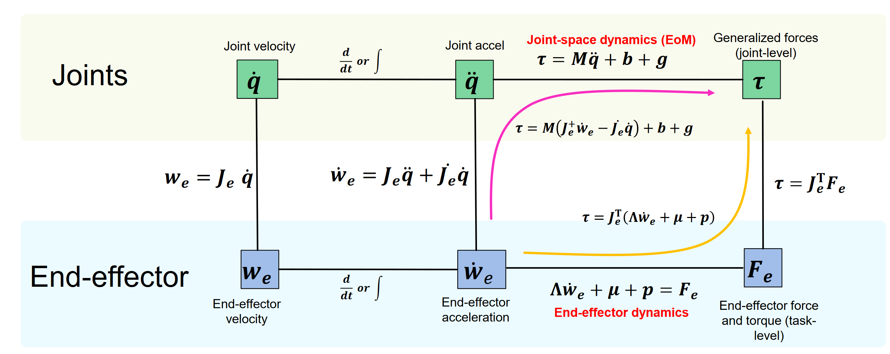
Generalized Equation of Motion
M ( q ) q ¨ + b ( q , q ˙ ) + g ( q ) = S ⊤ τ + J c ( q ) ⊤ F c \textbf M(\textbf q)\ddot{\textbf q} + \textbf b(\textbf q,\dot{\textbf q})+\textbf g(\textbf q) = \textbf S^\top\tau + \textbf J_c(\textbf q)^\top \textbf F_c
M ( q ) q ¨ + b ( q , q ˙ ) + g ( q ) = S ⊤ τ + J c ( q ) ⊤ F c
q , q ˙ , q ¨ ∈ R n q \textbf q,\dot{\textbf q},\ddot{\textbf q}\in \mathbb R^{n_q} q , q ˙ , q ¨ ∈ R n q
M ( q ) ∈ R n q × n q \textbf M(\textbf q)\in \mathbb R^{n_q\times n_q} M ( q ) ∈ R n q × n q M = ∑ i = 1 n b ( A J S i ⊤ m A J S i + B J R i ⊤ B Θ S i B J R i ) \textbf M=\sum_{i=1}^{n_b}(_{\mathcal A}\textbf J_{S_i}^\top m_{\mathcal A}\textbf J_{S_i}+_{\mathcal B}\textbf J_{R_i}^\top~ _{\mathcal B}\Theta_{S_i} ~_{\mathcal B}\textbf J_{R_i}) M = ∑ i = 1 n b ( A J S i ⊤ m A J S i + B J R i ⊤ B Θ S i B J R i )
b ( q , q ˙ ) ∈ R n q \textbf b(\textbf q,\dot{\textbf q})\in \mathbb R^{n_q} b ( q , q ˙ ) ∈ R n q \textbf b=\sum_{i=1}^{n_b}\left(_{\mathcal A}\textbf J_{S_i}^\top m_{\mathcal A}\dot{\textbf J}_{S_i}\dot{\textbf q}+~_{\mathcal B}\textbf J_{R_i}^\top\left(_{\mathcal B}\Theta_{\mathcal B}\dot{\textbf J}_{R_i}\dot{\textbf q}+~_{\mathcal B}\boldsymbol\Omega_{S_i}\cross ~_{\mathcal B}\Theta_{S_i}~_{\mathcal B}\boldsymbol \Omega_{S_i}\right)\right) coriolis and centrifugal terms, where Ω S i = J R i q ˙ \boldsymbol \Omega_{S_i} = \textbf J_{R_i}\dot{\textbf q} Ω S i = J R i q ˙
g ( q ) ∈ R n q \textbf g(\textbf q)\in \mathbb R^{n_q} g ( q ) ∈ R n q g = ∑ i = 1 n b − A J S i ⊤ A F g , i \textbf g=\sum_{i=1}^{n_b}-~_{\mathcal A}\textbf J_{S_i}^\top ~_{\mathcal A}\textbf F_{g,i} g = ∑ i = 1 n b − A J S i ⊤ A F g , i
Example : g = ∑ i − J i ⊤ m i ( 0 0 − 9.81 ) \textbf g = \sum_i -\textbf J_i^\top m_i\begin{pmatrix}0\\0\\-9.81\end{pmatrix} g = ∑ i − J i ⊤ m i 0 0 − 9.81
τ ∈ R n τ \tau\in \mathbb R^{n_\tau} τ ∈ R n τ τ = ∑ k = 1 n A τ a , k τ e x t \tau = \sum_{k=1}^{n_A} \tau_{a,k}\tau_{ext} τ = ∑ k = 1 n A τ a , k τ e x t
actuator generalized force τ a , k = ( J S k − J S k − 1 ) ⊤ F a , k + ( J R k − J R k − 1 ) ⊤ T a , k \tau_{a,k}=(\textbf J_{S_k} - \textbf J_{S_{k-1}})^\top\textbf F_{a,k}+(\textbf J_{R_k}-\textbf J_{R_{k-1}})^\top \textbf T_{a,k} τ a , k = ( J S k − J S k − 1 ) ⊤ F a , k + ( J R k − J R k − 1 ) ⊤ T a , k T \textbf T T
external generalized force τ e x t = ∑ j = 1 n f , e x t J P , j ⊤ F j + ∑ j = 1 n m , e x t J R , j ⊤ T e x t , j \tau_{ext}=\sum_{j=1}^{n_{f,ext}}\textbf J_{P,j}^\top \textbf F_j+\sum_{j=1}^{n_{m,ext}}\textbf J_{R,j}^\top\textbf T_{ext, j} τ e x t = ∑ j = 1 n f , e x t J P , j ⊤ F j + ∑ j = 1 n m , e x t J R , j ⊤ T e x t , j
S ∈ R n τ × n q \textbf S\in \mathbb R^{n_\tau\times n_q} S ∈ R n τ × n q
F c ∈ R n c \textbf F_c\in \mathbb R^{n_c} F c ∈ R n c
Soft Contact Model : F c = k p ( r c − r c 0 ) + k d r ˙ c \textbf F_c = k_p(\textbf r_c-\textbf r_{c0})+k_d\dot{\textbf r}_c F c = k p ( r c − r c 0 ) + k d r ˙ c Contact Force from Constraint r c = const r ˙ = r ¨ c = 0 \textbf r_c = \text{const}\quad\dot{\textbf r}=\ddot{\textbf r}_c=0 r c = const r ˙ = r ¨ c = 0 F c = ( J c M − 1 J c ⊤ ) − 1 ( J c M − 1 ( S ⊤ τ − b − g ) + J ˙ c u ) \textbf F_c = (\textbf J_c\textbf M^{-1}\textbf J_c^\top)^{-1}\left(\textbf J_c\textbf M^{-1}(\textbf S^{\top}\tau-\textbf b-\textbf g)+\dot{\textbf J}_c\textbf u\right) F c = ( J c M − 1 J c ⊤ ) − 1 ( J c M − 1 ( S ⊤ τ − b − g ) + J ˙ c u )
J c ( q ) ∈ R n c × n q \textbf J_c(\textbf q)\in \mathbb R^{n_c\times n_q} J c ( q ) ∈ R n c × n q
Kinect Energy : T ( q , q ˙ ) = 1 2 q ˙ ⊤ ( ∑ i = 1 n b ( J S i ⊤ m J S i + J R i ⊤ Θ S i J R i ) ) ⏟ M ( q ) q ˙ \mathcal T (\textbf q,\dot{\textbf q})=\frac{1}{2}\dot{\textbf q}^\top\underbrace{\left(\sum_{i=1}^{n_b}(\textbf J_{S_i}^\top m\textbf J_{S_i}+\textbf J_{R_i}^\top \Theta_{S_i}\textbf J_{R_i})\right)}_{\textbf M(\textbf q)}\dot {\textbf q} T ( q , q ˙ ) = 2 1 q ˙ ⊤ M ( q ) ( i = 1 ∑ n b ( J S i ⊤ m J S i + J R i ⊤ Θ S i J R i ) ) q ˙
Potential Energy : U g = − ∑ i = 1 n b r S i ⊤ F g i \mathcal U_g = -\sum_{i=1}^{n_b} \textbf r_{S_i}^\top \textbf F_{g_i} U g = − ∑ i = 1 n b r S i ⊤ F g i
Dynamics of Floating Base System
Joint Space Dynamic Control
Gravity Compensation : τ ∗ = k p ( q ∗ − q ) + k d ( q ˙ ∗ − q ˙ ) + g ( q ) \tau^* = k_p(\textbf q^* - \textbf q) + k_d(\dot{\textbf q}^*-\dot{\textbf q})+\textbf g(\textbf q) τ ∗ = k p ( q ∗ − q ) + k d ( q ˙ ∗ − q ˙ ) + g ( q ) Inverse Dynamics Control : q ¨ ∗ = k p ( q ∗ − q ) + k d ( q ˙ ∗ − q ˙ ) \ddot{\textbf q}^* = k_p(\textbf q^*-\textbf q)+k_d(\dot{\textbf q}^*-\dot{\textbf q}) q ¨ ∗ = k p ( q ∗ − q ) + k d ( q ˙ ∗ − q ˙ ) ω = k p , D = k d 2 k p \omega=\sqrt{k_p},D=\frac{k_d}{2\sqrt{k_p}} ω = k p , D = 2 k p k d
Task Space Dynamic Control : w ˙ e = ( r ¨ ω ˙ ) = J e q ¨ + J ˙ e q ˙ \dot {\textbf w}_e = \begin{pmatrix}\ddot{\textbf r}\\\dot{\boldsymbol \omega}\end{pmatrix}=\textbf J_e\ddot{\textbf q} + \dot{\textbf J}_e\dot{\textbf q} w ˙ e = ( r ¨ ω ˙ ) = J e q ¨ + J ˙ e q ˙
Multi-task Decomposition :
Equal Priority : q ¨ = [ J 1 ⋮ J n t ] + ( ( w 1 ˙ ∗ ⋮ w n t ∗ ˙ ) − [ J ˙ 1 ⋮ J ˙ n t ] q ˙ ) \ddot {\textbf q} =\begin{bmatrix}\textbf J_1\\\vdots\\\textbf J_{n_t}\end{bmatrix}^+\left(\begin{pmatrix}\dot{\textbf w_1}^*\\\vdots\\ \dot{\textbf w^*_{n_t}}\end{pmatrix} - \begin{bmatrix}\dot{\textbf J}_1\\\vdots\\\dot{\textbf J}_{n_t}\end{bmatrix}\dot{\textbf q}\right) q ¨ = J 1 ⋮ J n t + w 1 ˙ ∗ ⋮ w n t ∗ ˙ − J ˙ 1 ⋮ J ˙ n t q ˙
Prioritization : q ¨ = ∑ i = 1 n t N i q ¨ i \ddot {\textbf q} = \sum_{i=1}^{n_t}\textbf N_{i}\ddot {\textbf q}_i q ¨ = ∑ i = 1 n t N i q ¨ i q ¨ i = ( J i N i ) + ( w i ˙ ∗ − J ˙ i q ˙ − J i ∑ k = 1 i − 1 N k q ¨ k ) \ddot {\textbf q}_i = (\textbf J_i\textbf N_{i})^+\left(\dot{\textbf w_i}^* - \dot{\textbf J}_i\dot{\textbf q}-\textbf J_i\sum_{k=1}^{i-1}\textbf N_k\ddot {\textbf q}_k\right) q ¨ i = ( J i N i ) + ( w i ˙ ∗ − J ˙ i q ˙ − J i ∑ k = 1 i − 1 N k q ¨ k ) N i = I − J i + J i \textbf N_i=\mathbb I - \textbf J_i^+\textbf J_i N i = I − J i + J i
End-effector Dynamics : Λ e w ˙ e + μ + p = F e \Lambda _e \dot{\textbf w}_e + \boldsymbol \mu + \textbf p=\textbf F_e Λ e w ˙ e + μ + p = F e
Λ e = ( J e M − 1 J e ⊤ ) − 1 \Lambda_e = (\textbf J_e\textbf M^{-1}\textbf J_e^\top)^{-1} Λ e = ( J e M − 1 J e ⊤ ) − 1 μ = Λ e J e M − 1 b − Λ e J ˙ e q ˙ \boldsymbol \mu = \Lambda_e\textbf J_e\textbf M^{-1}\textbf b - \Lambda_e \dot{\textbf J}_e\dot{\textbf q} μ = Λ e J e M − 1 b − Λ e J ˙ e q ˙ p = Λ e J e M − 1 g \textbf p = \Lambda_e \textbf J_e\textbf M^{-1}\textbf g p = Λ e J e M − 1 g joint torque τ = J e ⊤ F e \tau = \textbf J_e^\top \textbf F_e τ = J e ⊤ F e
End-effector Motion Control : τ ∗ = J ⊤ ( Λ e w ˙ e ∗ + μ + p ) = J ⊤ Λ e w ˙ e ∗ + b − J ⊤ Λ e J ˙ e q ˙ + g \tau^* = \textbf J^\top(\Lambda_e\dot{\textbf w}_e^*+\boldsymbol \mu + \textbf p)=\textbf J^\top \Lambda_e\dot{\textbf w}_e^*+\textbf b-\textbf J^\top \Lambda_e\dot{\textbf J}_e\dot{\textbf q}+\textbf g τ ∗ = J ⊤ ( Λ e w ˙ e ∗ + μ + p ) = J ⊤ Λ e w ˙ e ∗ + b − J ⊤ Λ e J ˙ e q ˙ + g
Operational Space Control : τ ∗ = J ⊤ ( Λ S M w ˙ e + S F F c + μ + p ) \tau^*=\textbf J^\top(\Lambda \textbf S_M\dot{\textbf w}_e + \textbf S_F\textbf F_c + \boldsymbol \mu +\textbf p) τ ∗ = J ⊤ ( Λ S M w ˙ e + S F F c + μ + p )
Σ p = [ σ p x 0 0 0 σ p y 0 0 0 σ p z ] \Sigma_p =\begin{bmatrix}\sigma_{px}&0&0\\0&\sigma_{py}&0\\0&0&\sigma_{pz}\end{bmatrix} Σ p = σ p x 0 0 0 σ p y 0 0 0 σ p z Σ r = [ σ r x 0 0 0 σ r y 0 0 0 σ r z ] \Sigma_r = \begin{bmatrix}\sigma_{rx}&0&0\\0&\sigma_{ry}&0\\0&0&\sigma_{rz}\end{bmatrix} Σ r = σ r x 0 0 0 σ ry 0 0 0 σ rz σ i = 1 \sigma_i=1 σ i = 1 0 0 0
S M = [ C ⊤ Σ p C 0 0 C ⊤ Σ r C ] \textbf S_M=\begin{bmatrix}\textbf C^\top \Sigma_p\textbf C&0\\0&\textbf C^\top \Sigma_r \textbf C\end{bmatrix} S M = [ C ⊤ Σ p C 0 0 C ⊤ Σ r C ] S F = [ C ⊤ ( I − Σ p ) C 0 0 C ⊤ ( I − Σ r ) C ] \textbf S_F=\begin{bmatrix}\textbf C^\top (\mathbb I -\Sigma_p)\textbf C&0 \\ 0& \textbf C^\top (\mathbb I-\Sigma_r)\textbf C\end{bmatrix} S F = [ C ⊤ ( I − Σ p ) C 0 0 C ⊤ ( I − Σ r ) C ]
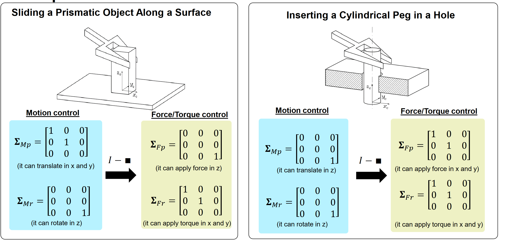
Inverse Dynamics for Floating-Base Systems
Hierarchical Least Square Optimization : min x ∥ A i x − b i ∥ 2 \underset{\textbf x}{\text{min}}\Vert \textbf A_i\textbf x - \textbf b_i\Vert_2 x min ∥ A i x − b i ∥ 2
normally x = [ q ¨ ⊤ τ ⊤ I F E ⊤ ] ⊤ \textbf x = \begin{bmatrix}\ddot {\textbf q}^\top &\boldsymbol\tau^\top & _{\mathcal I}\textbf F_E^\top\end{bmatrix}^\top x = [ q ¨ ⊤ τ ⊤ I F E ⊤ ] ⊤
n T n_T n T x = 0 \textbf x=\textbf 0 x = 0 N 1 = I \textbf N_1 = \mathbb I N 1 = I for i = 1 → n T i=1\to n_T i = 1 → n T
x i ← ( A i N i ) + ( b i − A i x ) \textbf x_i\gets (\textbf A_i\textbf N_i)^+(\textbf b_i-\textbf A_i\textbf x) x i ← ( A i N i ) + ( b i − A i x ) x ← x + N i x i \textbf x\gets \textbf x + \textbf N_i\textbf x_i x ← x + N i x i N i + 1 = N ( [ A 1 ⊤ ⋯ A i ⊤ ] ⊤ ) \textbf N_{i+1}=\mathcal N\left(\left[\textbf A_1^\top\cdots\textbf A_i^\top\right]^\top\right) N i + 1 = N ( [ A 1 ⊤ ⋯ A i ⊤ ] ⊤ ) N ( A ) = I − A + A \mathcal N(\textbf A)=\mathbb I-\textbf A^+ \textbf A N ( A ) = I − A + A N ( A ) A = 0 \mathcal N(\textbf A)\textbf A = \textbf 0 N ( A ) A = 0
Legged Robot
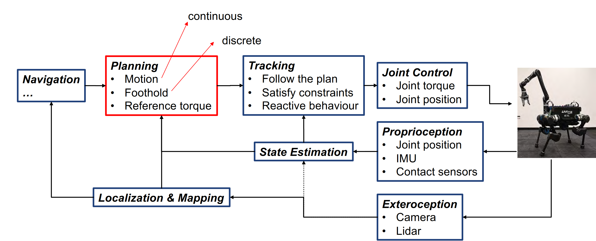
Input : q , q ˙ \textbf q,\dot{\textbf q} q , q ˙
Optimization Target : q ¨ , F c , τ \ddot {\textbf q}, \textbf F_c, \boldsymbol \tau q ¨ , F c , τ
Tasks :
Equation of Motion : [ M ( q ) − J c − S ⊤ ] [ q ¨ F c τ ] = − b ( q ˙ , q ) − g ( q ) \begin{bmatrix}\textbf M(\textbf q)&-\textbf J_c&-\textbf S^\top\end{bmatrix}\begin{bmatrix}\ddot {\textbf q}\\\textbf F_c\\\boldsymbol \tau \end{bmatrix} = - \textbf b(\dot{\textbf q},\textbf q)-\textbf g(\textbf q) [ M ( q ) − J c − S ⊤ ] q ¨ F c τ = − b ( q ˙ , q ) − g ( q )
End Effector Desired Velocity w e ∗ \textbf w^*_e w e ∗ [ J e 0 0 ] [ q ¨ F c τ ] = w ˙ e − J ˙ c q ˙ \begin{bmatrix}\textbf J_e&\textbf 0 &\textbf 0\end{bmatrix}\begin{bmatrix}\ddot {\textbf q}\\\textbf F_c\\\boldsymbol \tau \end{bmatrix} = \dot{\textbf w}_e -\dot{\textbf J}_c \dot{\textbf q} [ J e 0 0 ] q ¨ F c τ = w ˙ e − J ˙ c q ˙ w ˙ e = k p ( r e ∗ − r e ) − k d ( w e ∗ − w e ) \dot {\textbf w}_e = k_p(\textbf r_e^*-\textbf r_e)-k_d(\textbf w_e^*-\textbf w_e) w ˙ e = k p ( r e ∗ − r e ) − k d ( w e ∗ − w e )
Torque minimize : [ 0 0 I ] [ q ¨ F c τ ] = 0 \begin{bmatrix}\textbf 0&\textbf 0&\mathbb I\end{bmatrix}\begin{bmatrix}\ddot {\textbf q}\\\textbf F_c\\\boldsymbol \tau \end{bmatrix} = \textbf 0 [ 0 0 I ] q ¨ F c τ = 0 Torque limits : [ 0 0 I ] [ q ¨ F c τ ] ≤ 1 ⋅ τ m a x \begin{bmatrix}\textbf 0&\textbf 0&\mathbb I\end{bmatrix}\begin{bmatrix}\ddot {\textbf q}\\\textbf F_c\\\boldsymbol \tau \end{bmatrix} \le \textbf 1 \cdot\tau_{max} [ 0 0 I ] q ¨ F c τ ≤ 1 ⋅ τ ma x [ 0 0 − I ] [ q ¨ F c τ ] ≤ − 1 ⋅ τ m a x \begin{bmatrix}\textbf 0&\textbf 0&-\mathbb I\end{bmatrix}\begin{bmatrix}\ddot {\textbf q}\\\textbf F_c\\\boldsymbol \tau \end{bmatrix} \le -\textbf 1 \cdot\tau_{max} [ 0 0 − I ] q ¨ F c τ ≤ − 1 ⋅ τ ma x Contact Force minimize : $$\begin{bmatrix}\textbf 0&\mathbb I & \textbf 0\end{bmatrix}\begin{bmatrix}\ddot {\textbf q}\\textbf F_c\\boldsymbol \tau \end{bmatrix} = \textbf 0$$Friction Cone : [ 0 [ 0 − 1 1 − μ − 1 − μ ] 0 0 [ 0 − 1 1 − μ − 1 − μ ] 0 ] [ q ¨ F c τ ] ≤ 0 \begin{bmatrix}\textbf 0&\begin{matrix}\begin{bmatrix}0&-1\\1-\mu & -1-\mu\end{bmatrix}&\textbf 0\\ \textbf 0 & \begin{bmatrix}0&-1\\1-\mu & -1-\mu\end{bmatrix}\end{matrix} & \textbf 0\end{bmatrix}\begin{bmatrix}\ddot {\textbf q}\\\textbf F_c\\\boldsymbol \tau \end{bmatrix} \le \textbf 0 0 [ 0 1 − μ − 1 − 1 − μ ] 0 0 [ 0 1 − μ − 1 − 1 − μ ] 0 q ¨ F c τ ≤ 0 2 D 2D 2 D x − z x-z x − z
Optimization
[HO]Hierarchical Least Square Optimization
Rotorcrafts
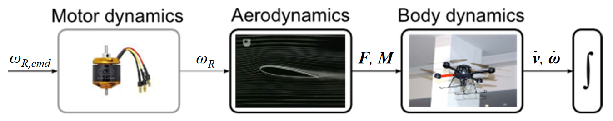
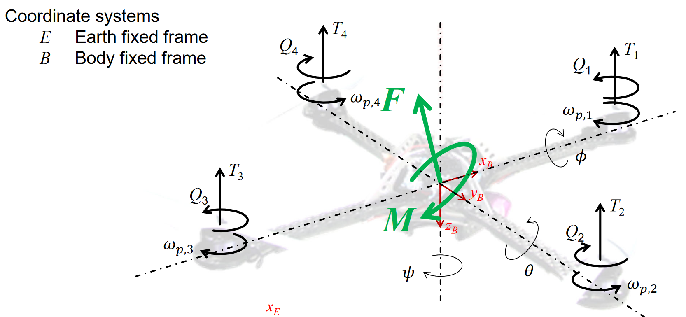
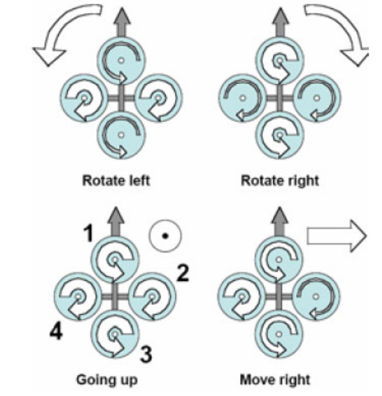
[ m I 0 0 Θ ] ⏟ M [ ν ˙ ω ˙ ] ⏟ q ¨ + [ ω × m ν ω × Θ ω ] ⏟ b = [ F M ⏟ torque ] ⏟ τ \underbrace{\begin{bmatrix}m\mathbb I & 0 \\ 0 & \boldsymbol\Theta\end{bmatrix}}_{\textbf M}\underbrace{\begin{bmatrix}\dot{\boldsymbol \nu} \\ \dot{\boldsymbol \omega}\end{bmatrix}}_{\ddot{\textbf q}} + \underbrace{\begin{bmatrix}\boldsymbol \omega \times m \boldsymbol \nu \\ \boldsymbol \omega\times \boldsymbol \Theta\boldsymbol \omega\end{bmatrix}}_{\textbf b} = \underbrace{\begin{bmatrix}\textbf F\\\underbrace{ M}_{\text{torque}}\end{bmatrix}}_{\boldsymbol \tau}
M [ m I 0 0 Θ ] q ¨ [ ν ˙ ω ˙ ] + b [ ω × m ν ω × Θ ω ] = τ F torque M
B F = C I B ⊤ I [ 0 0 m g ] ⏟ B F G + ∑ i = 1 4 B [ 0 0 − T i ] ⏟ B F A e r o _{\mathcal B}\textbf F= \underbrace{\textbf C_{\mathcal{IB}}^\top ~_{\mathcal I}\begin{bmatrix}0\\0\\mg\end{bmatrix}}_{_{\mathcal B}\textbf F_G} + \underbrace{\sum_{i=1}^4 ~_{\mathcal B}\begin{bmatrix}0\\0\\-T_i\end{bmatrix}}_{_{\mathcal B}\textbf F_{Aero}}
B F = B F G C I B ⊤ I 0 0 m g + B F A ero i = 1 ∑ 4 B 0 0 − T i
B M = B [ l ( T 4 − T 2 ) l ( T 1 − T 3 ) 0 ] ⏟ B M T + B [ 0 0 ∑ i = 1 4 Q i ( − 1 ) i ] ⏟ B Q _{\mathcal B}M = \underbrace{_{\mathcal B}\begin{bmatrix}l(T_4-T_2)\\l(T_1-T_3)\\0\end{bmatrix}}_{_{\mathcal B}M_T}+ \underbrace{_{\mathcal B}\begin{bmatrix}0\\0\\ \sum_{i=1}^4 Q_i(-1)^i\end{bmatrix}}_{_{\mathcal B} Q}
B M = B M T B l ( T 4 − T 2 ) l ( T 1 − T 3 ) 0 + B Q B 0 0 ∑ i = 1 4 Q i ( − 1 ) i
T i T_i T i i i i T i = b ω p , i 2 T_i = b\omega_{p,i}^2 T i = b ω p , i 2 Q i Q_i Q i i i i Q i = d ω p , i 2 Q_i=d\omega_{p,i}^2 Q i = d ω p , i 2 B M T _{\mathcal B}M_T B M T M T = [ − sin θ sin ϕ cos θ cos ϕ cos θ ] m g M_T = \begin{bmatrix}-\sin\theta\\\sin\phi\cos\theta\\\cos\phi \cos\theta\end{bmatrix}mg M T = − sin θ sin ϕ cos θ cos ϕ cos θ m g B Q _{\mathcal B}Q B Q C I B \textbf C_{\mathcal {IB}} C I B B ω _{\mathcal B}\boldsymbol \omega B ω B ω = B [ p q r ] = [ ϕ ˙ θ ˙ ψ ˙ ] _{\mathcal B}\boldsymbol \omega =_{\mathcal B} \begin{bmatrix}p\\q\\r\end{bmatrix}=\begin{bmatrix}\dot \phi\\\dot \theta\\\dot \psi\end{bmatrix} B ω = B p q r = ϕ ˙ θ ˙ ψ ˙ ω p , i \omega_{p,i } ω p , i i i i B ν _{\mathcal B}\boldsymbol \nu B ν B ν = B [ u v w ] = B [ x ˙ y ˙ z ˙ ] _{\mathcal B}\boldsymbol \nu = _{\mathcal B}\begin{bmatrix}u\\v\\w\end{bmatrix} = _{\mathcal B}\begin{bmatrix}\dot x\\\dot y \\\dot z\end{bmatrix} B ν = B u v w = B x ˙ y ˙ z ˙ l l l
Control of Quadrotor
Θ x x p ˙ = q ⋅ r ( Θ y y − Θ z z ) + U 2 ( 1 ) Θ y y q ˙ = r ⋅ p ( Θ z z − Θ x x ) + U 3 ( 2 ) Θ z z r ˙ = U 4 ( 3 ) m u ˙ = m ( r ⋅ v − q ⋅ w ) − sin θ m g ( 4 ) m v ˙ = m ( p ⋅ w − r ⋅ u ) + sin ϕ cos θ m g ( 5 ) m w ˙ = m ( q ⋅ u − p ⋅ v ) + cos ϕ cos θ m g − U 1 ( 6 ) \begin{array}{lr}
\boldsymbol \Theta_{xx}\dot p = q\cdot r(\boldsymbol \Theta_{yy}-\boldsymbol \Theta_{zz}) + U_2 & (1)
\\
\boldsymbol \Theta_{yy}\dot q = r\cdot p(\boldsymbol \Theta_{zz}-\boldsymbol \Theta_{xx}) + U_3 & (2)
\\
\boldsymbol \Theta_{zz}\dot r = U_4 & (3)
\\
m\dot u = m(r\cdot v - q\cdot w )- \sin\theta~ mg & (4)
\\
m\dot v = m(p\cdot w - r\cdot u ) + \sin \phi \cos \theta ~ mg & (5)
\\
m\dot w = m(q\cdot u - p\cdot v) + \cos \phi \cos \theta ~ mg - U_1 & (6)
\end{array}
Θ xx p ˙ = q ⋅ r ( Θ yy − Θ zz ) + U 2 Θ yy q ˙ = r ⋅ p ( Θ zz − Θ xx ) + U 3 Θ zz r ˙ = U 4 m u ˙ = m ( r ⋅ v − q ⋅ w ) − sin θ m g m v ˙ = m ( p ⋅ w − r ⋅ u ) + sin ϕ cos θ m g m w ˙ = m ( q ⋅ u − p ⋅ v ) + cos ϕ cos θ m g − U 1 ( 1 ) ( 2 ) ( 3 ) ( 4 ) ( 5 ) ( 6 )
[ U 1 U 2 U 3 U 4 ] = [ b b b b 0 − l b 0 l b l b 0 − l b 0 − d d − d d ] ⏟ A [ ω p , 1 2 ω p , 2 2 ω p , 3 2 ω p , 4 2 ] \begin{bmatrix}U_1\\U_2\\U_3\\U_4\end{bmatrix}=
\underbrace{\begin{bmatrix}b&b&b&b\\
0&-lb&0&lb\\
lb&0&-lb&0\\
-d&d&-d&d\end{bmatrix}}_{\textbf A}
\begin{bmatrix}\omega_{p,1}^2\\\omega_{p,2}^2\\\omega_{p,3}^2\\\omega_{p,4}^2\end{bmatrix}
U 1 U 2 U 3 U 4 = A b 0 l b − d b − l b 0 d b 0 − l b − d b l b 0 d ω p , 1 2 ω p , 2 2 ω p , 3 2 ω p , 4 2
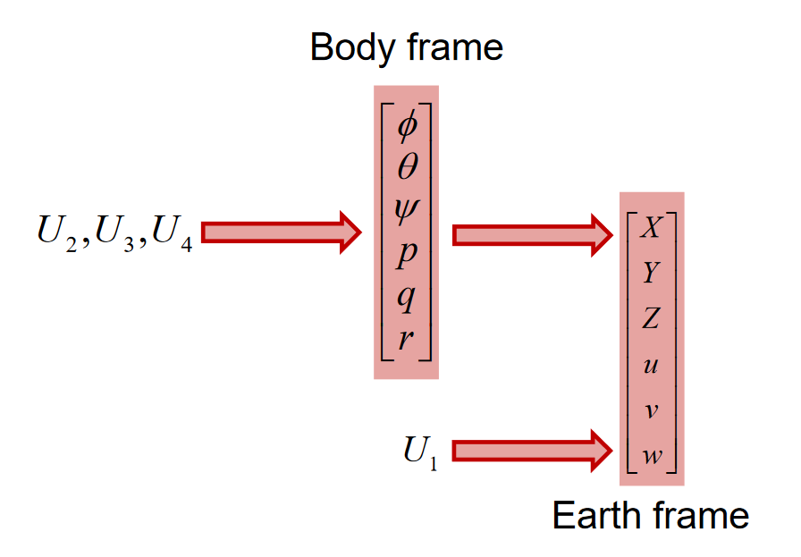
Hexacopter
C I B \textbf C_{\mathcal{IB}} C I B p i \textbf p_i p i i i i p i = [ l x i , l y i , 0 ] ⊤ \textbf p_i = [l_{xi},l_{yi},0]^\top p i = [ l x i , l y i , 0 ] ⊤ g \textbf g g g = C I B ⊤ [ 0 , 0 , g ] ⊤ \textbf g = \textbf C_{\mathcal{IB}}^\top [0,0,g]^\top g = C I B ⊤ [ 0 , 0 , g ] ⊤ T \textbf T T T = ∑ i = 1 6 [ 0 , 0 , b ω p , i 2 ] \textbf T = \sum_{i=1}^6[0,0,b\omega_{p,i}^2] T = ∑ i = 1 6 [ 0 , 0 , b ω p , i 2 ] M Q \textbf M_Q M Q M Q = ∑ i = 1 6 [ 0 , 0 , d ω p , i 2 ] ( − 1 ) i + 1 \textbf M_Q = \sum_{i=1}^6 [0,0,d\omega_{p,i}^2](-1)^{i+1} M Q = ∑ i = 1 6 [ 0 , 0 , d ω p , i 2 ] ( − 1 ) i + 1 M T \textbf M_T M T M T = ∑ i = 1 6 [ 0 , 0 , b ω p , i 2 ] × p i \textbf M_T = \sum_{i=1}^6[0,0,b\omega_{p,i}^2]\times\textbf p_i M T = ∑ i = 1 6 [ 0 , 0 , b ω p , i 2 ] × p i
A = ( b b b b b b b l s 30 b l b l s 30 − b l s 30 − b l − b l s 30 − b l c 30 0 b l c 30 b l c 30 0 − b l c 30 d − d d − d d − d ) \textbf A = \begin{pmatrix}b&b&b&b&b&b\\ bls_{30} & bl & bls_{30}& -bls_{30} & -bl & -bl s_{30}\\ -bl c_{30} & 0 & blc_{30} & blc_{30} & 0 & -blc_{30} \\ d& -d & d & -d & d & -d\end{pmatrix}
A = b b l s 30 − b l c 30 d b b l 0 − d b b l s 30 b l c 30 d b − b l s 30 b l c 30 − d b − b l 0 d b − b l s 30 − b l c 30 − d
MAV Control
B ω r e f = PID ( B ν r e f , B ν ) _{\mathcal B}\boldsymbol \omega_{ref} = \text{PID}(_{\mathcal B}\boldsymbol \nu_{ref},_{\mathcal B}\boldsymbol \nu) B ω re f = PID ( B ν re f , B ν ) U 1 = m g [ U 2 , U 3 , U 4 ] ⊤ = PID ( B ω r e f , B ω , B ω ˙ ) U_1 = mg\\ \begin{bmatrix}U_2,U_3,U_4\end{bmatrix}^\top=\text{PID}(_{\mathcal B}\boldsymbol \omega_{ref},~_{\mathcal B}\boldsymbol \omega,~_{\mathcal B}\dot{\boldsymbol \omega}) U 1 = m g [ U 2 , U 3 , U 4 ] ⊤ = PID ( B ω re f , B ω , B ω ˙ ) ω p 2 = A + [ U 1 U 2 U 3 U 4 ] ⊤ \omega_p^2 = \textbf A^+ \begin{bmatrix}U_1&U_2&U_3&U_4\end{bmatrix}^\top ω p 2 = A + [ U 1 U 2 U 3 U 4 ] ⊤
Propeller Aerodynamics
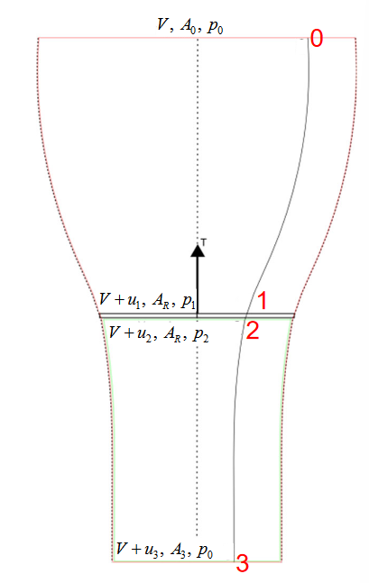
u 1 = u 2 u_1 = u_2 u 1 = u 2 ρ A 0 V = ρ A R ( V + u 1 ) = ρ A R ( V + u 2 ) = ρ A 3 u 3 \rho A_0 V = \rho A_R(V+u_1) = \rho A_R(V+u_2)=\rho A_3 u_3 ρ A 0 V = ρ A R ( V + u 1 ) = ρ A R ( V + u 2 ) = ρ A 3 u 3 u 3 = 2 u 1 u_3 = 2u_1 u 3 = 2 u 1 F Thrust = ρ A R ( V + u 1 ) u 1 F_{\text{Thrust}} = \rho A_R(V+u_1)u_1 F Thrust = ρ A R ( V + u 1 ) u 1 P Thrust = 1 2 ρ A R ( V + u 1 ) ( 2 V + u 3 ) u 3 P_{\text{Thrust}} = \frac{1}{2}\rho A_R(V+u_1)(2V + u_3) u_3 P Thrust = 2 1 ρ A R ( V + u 1 ) ( 2 V + u 3 ) u 3 Hover case : P = F Thrust 3 / 2 2 ρ A R = ( m g ) 3 / 2 2 ρ A R P = \frac{F^{3/2}_{\text{Thrust}}}{\sqrt{2\rho A_R}} = \frac{(mg)^{3/2}}{\sqrt{2\rho A_R}} P = 2 ρ A R F Thrust 3/2 = 2 ρ A R ( m g ) 3/2
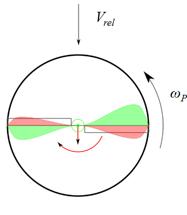
T T T
Aerodynamic force perpendicular to propeller plane
∣ T ∣ = ρ 2 A P C T ( ω P R P ) 2 |T|=\frac{\rho}{2}A_PC_T(\omega_PR_P)^2 ∣ T ∣ = 2 ρ A P C T ( ω P R P ) 2
Q Q Q
torque around rotor plane in the opposite direction of the propeller spinning direction
∣ Q ∣ = ρ 2 A P C Q ( ω P R P ) 2 R P |Q| =\frac{\rho}{2}A_PC_Q(\omega_PR_P)^2 R_P ∣ Q ∣ = 2 ρ A P C Q ( ω P R P ) 2 R P C T C_T C T C Q C_Q C Q
H H H
opposite to horizontal flight direction V H V_H V H
∣ H ∣ = ρ 2 A P C H ( ω P R P ) 2 |H| = \frac{\rho}{2}A_PC_H(\omega_PR_P)^2 ∣ H ∣ = 2 ρ A P C H ( ω P R P ) 2
R R R
around flight direction
∣ R ∣ = ρ 2 A P C R ( ω P R P ) 2 R P |R| = \frac{\rho}{2}A_PC_R(\omega_PR_P)^2R_P ∣ R ∣ = 2 ρ A P C R ( ω P R P ) 2 R P C H C_H C H C R C_R C R μ = V ω P R P \mu = \frac{V}{\omega_PR_P} μ = ω P R P V
[BEMT]Blade Elemental and Momentum Theory : calculate forces for each element and sum them up
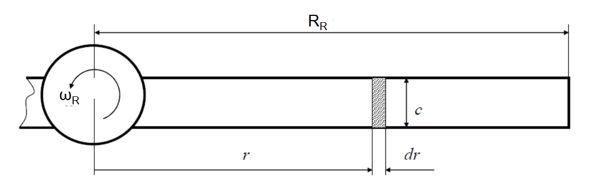
Fixed-Wing
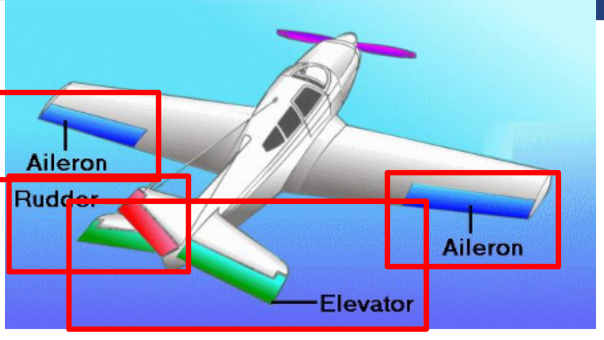
Ailerons (rolling)
Elevator (pitching)
Rudder (yawing)
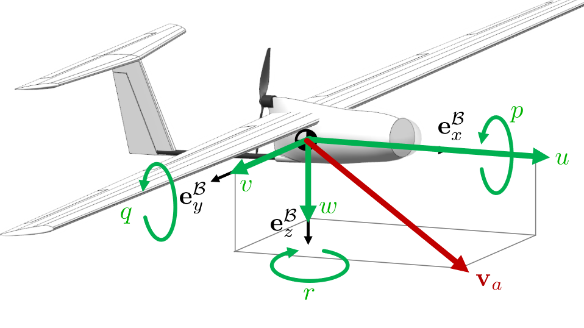
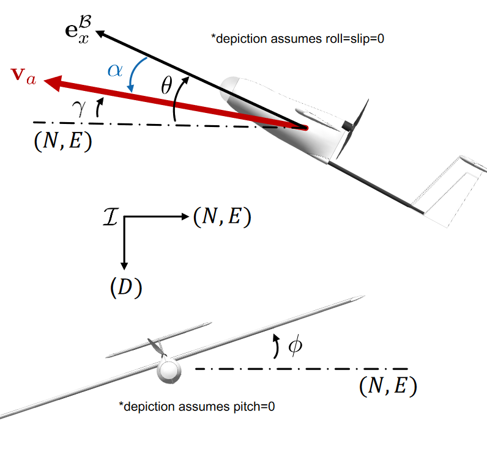
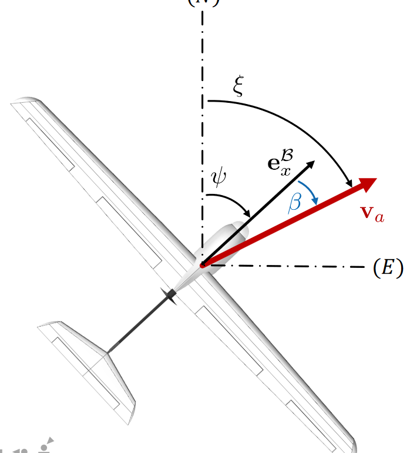
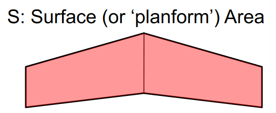
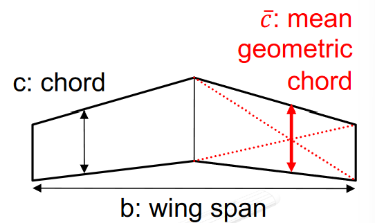
α \alpha α \atan(w/u)
stall : { α ↑ → c L ↑ α < stall α ↑ → c L ↓ α > stall \begin{cases}\alpha\uparrow \to c_L\uparrow & \alpha <\text{stall} \\ \alpha^\uparrow \to c_L\downarrow & \alpha > \text{stall}\end{cases} { α ↑→ c L ↑ α ↑ → c L ↓ α < stall α > stall
β \beta β \beta = \asin(v/V) θ \theta θ ϕ \phi ϕ x x x ψ \psi ψ γ \gamma γ v a \textbf v_a v a ξ \xi ξ v a \textbf v_a v a v w \textbf v_w v w v \textbf v v L L L L = 1 2 ρ V 2 S c L ( α ) L=\frac{1}{2}\rho V^2 S{c_L}(\alpha) L = 2 1 ρ V 2 S c L ( α ) S S S D D D D = 1 2 ρ V 2 S c D D=\frac{1}{2}\rho V^2 S{c_D} D = 2 1 ρ V 2 S c D v a \textbf v_a v a
minimum fuel for straight : max α c L ( α ) c D ( α ) \underset{\alpha}{\text{max}}\frac{c_L(\alpha)}{c_D(\alpha)} α max c D ( α ) c L ( α )
minimum fuel for circle : max α c L ( α ) 3 c D ( α ) 2 \underset{\alpha}{\text{max}}\frac{c_L(\alpha)^3}{c_D(\alpha)^2} α max c D ( α ) 2 c L ( α ) 3
L m L_m L m L m = 1 2 ρ V 2 S b c l L_m = \frac{1}{2}\rho V^2 S{bc_l} L m = 2 1 ρ V 2 S b c l b b b M m M_m M m M m = 1 2 ρ V 2 S c ˉ c m M_m = \frac{1}{2}\rho V^2 S{\bar cc_m} M m = 2 1 ρ V 2 S c ˉ c m c c c N m N_m N m N m = 1 2 ρ V 2 S b c n N_m = \frac{1}{2}\rho V^2 S{bc_n} N m = 2 1 ρ V 2 S b c n
Steady Level Turning Flight
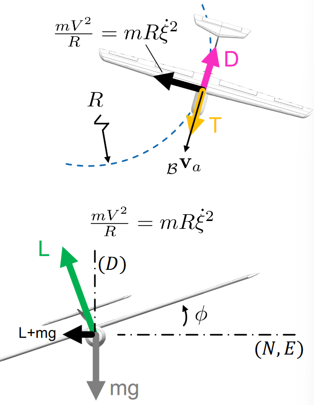
steady : B v ˙ a = B ω ˙ = 0 _{\mathcal B}\dot{\textbf v}_a = ~_{\mathcal B}\dot{\omega}=0 B v ˙ a = B ω ˙ = 0
level : γ = 0 \gamma = 0 γ = 0
turning : ϕ = const \phi = \text{const} ϕ = const
L cos ϕ = m g L sin ϕ = m V 2 R = m R ξ ˙ D = T → ξ ˙ = g tan ϕ V L ∝ 1 cos ϕ V ∝ 1 cos ϕ \begin{array}{l}
L\cos\phi = mg
\\
L\sin \phi = m\frac{V^2}{R} = mR\dot\xi
\\
D=T
\end{array}
\quad
\rightarrow
\quad
\begin{array}{l}
\dot{\xi} = \frac{g\tan\phi}{V}
\\
L\propto \frac{1}{\cos\phi}
\\
V\propto \sqrt{\frac{1}{\cos\phi}}
\end{array}
L cos ϕ = m g L sin ϕ = m R V 2 = m R ξ ˙ D = T → ξ ˙ = V g t a n ϕ L ∝ c o s ϕ 1 V ∝ c o s ϕ 1
L 1 \mathcal L_1 L 1
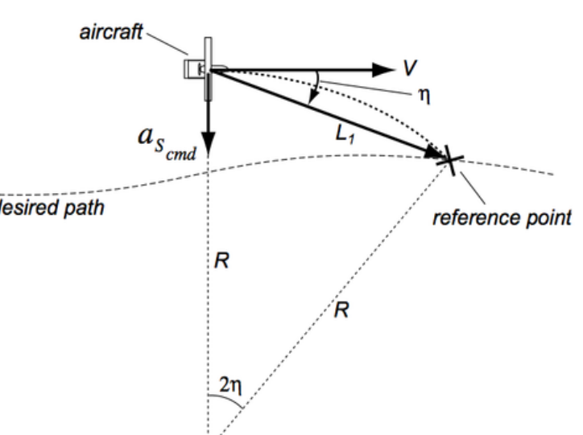
\begin{array}{l}
a_s = \frac{V^2}{R} = 2\frac{V^2 \sin\eta}{L_1}
\\
\dot\phi \approx \dot\xi= \phi_d = \atan\left(\frac{a_s}{g}\right)
\end{array}
Total Energy Control System
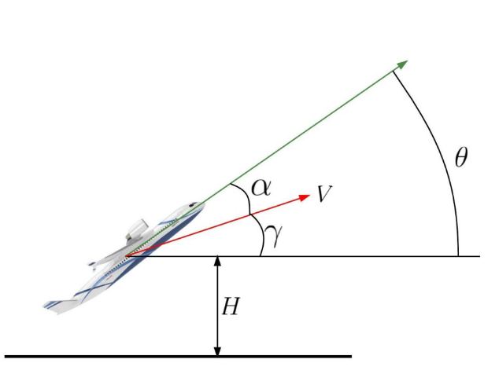
E ˙ s p e c = E ˙ t o t m g V = V ˙ g + sin γ ≈ V ˙ g + γ \dot E_{spec} = \frac{\dot E_{tot}}{mgV}=\frac{\dot V}{g}+\sin\gamma\approx \frac{\dot V}{g}+\gamma E ˙ s p ec = m g V E ˙ t o t = g V ˙ + sin γ ≈ g V ˙ + γ E ˙ d i s t = γ − V ˙ g \dot E_{dist} = \gamma - \frac{\dot V}{g} E ˙ d i s t = γ − g V ˙
Modeling for Control (Linearized Plant)
Longitudinal Plant
input : Δ δ e , Δ δ T \Delta \delta_e, \Delta\delta_T Δ δ e , Δ δ T
output : Δ u , Δ w , Δ q , Δ θ \Delta u, \Delta w, \Delta q,\Delta\theta Δ u , Δ w , Δ q , Δ θ
Short Period Mode C \mathbb C C ω = 5 rad / s \omega=5\text{rad}/s ω = 5 rad / s
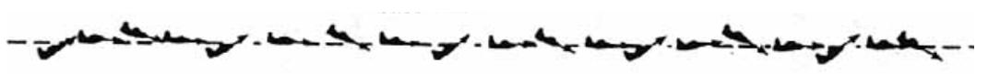
exchange between kinetic and potential energy: slow
Phugoid Mode C \mathbb C C ω = 0.6 rad / s \omega = 0.6~\text{rad}/s ω = 0.6 rad / s
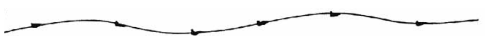
oscillation of angle of attack : fast
Lateral Plant
input : Δ δ a , Δ δ r \Delta \delta_a, \Delta \delta_r Δ δ a , Δ δ r
output : Δ v , Δ p , Δ r , Δ ϕ , Δ ψ \Delta v,\Delta p, \Delta r, \Delta\phi,\Delta\psi Δ v , Δ p , Δ r , Δ ϕ , Δ ψ
Spiral Mode R \mathbb R R
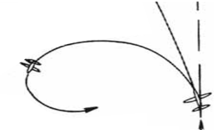
Dutch Roll Mode C \mathbb C C ω = 5 rad / s \omega = 5\text{rad}/s ω = 5 rad / s
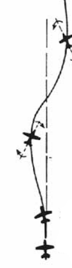
Roll Subsidence R \mathbb R R
Statements
Kinematics
\cross : A homogeneous transformation T A B T_{\mathcal {AB}} T A B B \mathcal B B A \mathcal A A v v v ✓ \checkmark ✓ C A B C_{\mathcal {AB}} C A B B \mathcal B B A \mathcal A A v v v \cross : A planar two-link robot arm has a unique solution to the inverse kinematic\cross : For a planar two-link robot arm, the differential inverse kinematic algorithm always converges to the same solution irrespective of initial configuration\cross : floating base in 3-dimensional space there exists a choice of generalized coordinates such that the analytical and geometric orientation
Dynamics
\cross : Given a perfect model, a robotic arm controlled by a PD controller with gravity compensation can achieve zero tracking error for any desired trajectory.\cross : When choosing a unit quaternion as part of the generalized coordinates7 × 7 7\times 7 7 × 7
Legged Robot
✓ \checkmark ✓ \cross : For a bipedal system with two point feet on the ground, every constraintu ˙ c o n s i s t e n t ∗ \dot u^∗_{consistent} u ˙ co n s i s t e n t ∗
Rotor Craft
\cross : A classic hexacopter (multi-rotor with 6 propellers) with all propellers✓ \checkmark ✓ \cross : The attitude dynamics of a quadcopter can be stabilized by a proportional\cross : The hub force on a rotor in froward flight results mostly due to an imbalance of the lift forces on the advancing and the retreating blade.✓ \checkmark ✓ \cross : A swashplate has generally three degree of freedom . One to control the cyclic pitch and two to control the collective pitch.\cross : A rotor in forward motion has a reverse flow region on the advancing blade\cross : In a front-rear rotor configuration, the yaw motion is steered by differential drag torques of the rotors.✓ \checkmark ✓
Fixed Wing
\cross : The magnitude of the GPS velocity can be used directly as an airspeed\cross : The heading of a conventional aircraft is controlled primarily by the rudder✓ \checkmark ✓ ✓ \checkmark ✓ \cross : in a coordinate turn, the sideslip force causes the needed centripetal acceleration